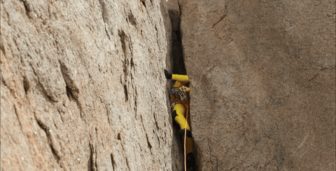
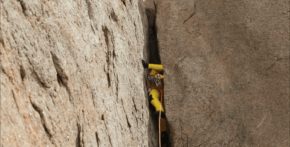

Margalef, el paraíso de escalada sobre agujeros,
conocida por su roca conglomerada, ofrece una escalada desafiante con
estilos atléticos y técnicos. Atractiva para escaladores de todos los niveles,
la zona cuenta con diversas rutas y un encantador ambiente.
Con condiciones de escalada durante todo el año, es un destino ideal para amantes de la escalada.


- Una de las mejores zonas de escalada del mundo.
- Más de 80 sectores diferentes y casi 1500 vías.
- Jordi Pou fue el primer equipador de la zona.
|
Información vías |
| 2 / 5+ |
137 |
| 6a / 6c+ |
434 |
| 7a / 7c+ |
508 |
| 8a / 9c+ |
290 |
| Proyectos |
93 |